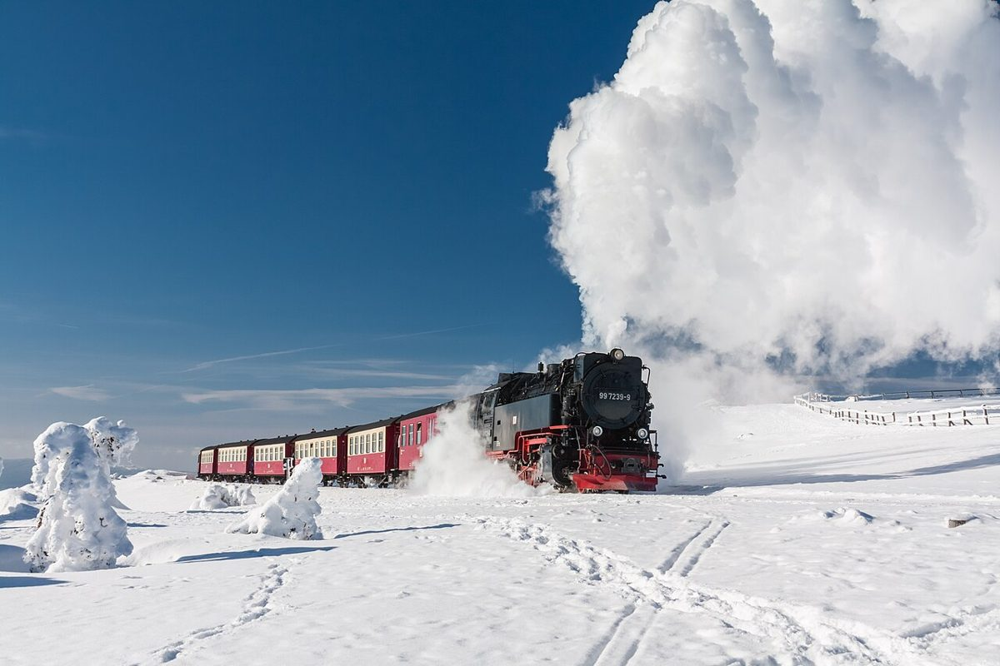

Descubriendo el Brocken: El Corazón Mágico del Harz

El Brocken, la montaña más alta de la cordillera del Harz en Alemania, es un destino lleno de misterio, naturaleza y leyendas. Con sus 1.141 metros, no solo ofrece vistas impresionantes, sino también una rica historia vinculada a brujas y folklore. Aquí te contamos todo lo que necesitas saber para planificar tu aventura.
Cómo llegar al Brocken
El acceso al Brocken es parte de la experiencia. La opción más pintoresca es tomar el tren de vapor Harzquerbahn desde Wernigerode o Drei Annen Hohne. Este tren histórico, que funciona con carbón, serpentea por bosques y valles hasta la cima. Si prefieres caminar, hay varias rutas de senderismo bien señalizadas, como el popular camino Goetheweg desde Torfhaus (unos 8 km). En coche, debes saber que no se puede llegar hasta la cumbre; el aparcamiento más cercano está en Schierke, desde donde hay que continuar a pie o en tren.
Mejor época para visitar
El Brocken es hermoso todo el año, pero cada estación tiene su magia. En invierno, la montaña se cubre de nieve, creando un paisaje de cuento (¡abrígate bien!). La primavera trae florecimiento y menos aglomeraciones, mientras que el verano es ideal para senderismo con temperaturas agradables. En otoño, los bosques se tiñen de rojo y oro, un espectáculo único. Evita los días muy nublados, ya que la cumbre suele estar cubierta de niebla.
5 imperdibles en el Brocken
1. La cumbre y su torre de observación: Disfruta de vistas panorámicas (en días despejados se ve hasta 80 km) y visita el centro de exposiciones sobre la historia de la montaña.
2. El jardín alpino: Un tesoro botánico con más de 1.500 especies de plantas de alta montaña.
3. El museo del Brocken: Aprende sobre la importancia estratégica de la montaña durante la Guerra Fría, cuando albergaba una estación de espionaje.
4. Las leyendas de brujas: Según el folklore, el Brocken es el escenario principal de la Walpurgisnacht (Noche de Brujas).
5. Senderos circundantes: Explora rutas como el Hexenstieg (Sendero de las Brujas) que conecta con otros puntos del Harz.
Sabores del Harz
No te vayas sin probar:
- Harzer Käse: Queso bajo en grasa y de fuerte aroma, típico de la región.
- Brotzeit: Una merienda alemana con embutidos, pan negro y pepinillos.
- Wildgerichte: Platos de caza como jabalí o venado, especialmente en otoño/invierno.
- Eierbier: Bebida tradicional hecha con cerveza oscura y yema de huevo (¡sorprendentemente rica!).
En la cumbre hay un restaurante que sirve platos típicos, perfecto para reponer energías.
Consejos finales
- Lleva siempre ropa abrigada, incluso en verano: en la cima suele hacer frío y viento.
- Calzado cómodo es imprescindible, especialmente si planeas caminar.
- Si viajas en tren, compra los billetes con anticipación en temporada alta.
- Respeta la naturaleza: el Brocken está en un parque nacional.
- Para una experiencia mágica, visita durante las celebraciones de Walpurgisnacht (noche del 30 de abril).
El Brocken es mucho más que una montaña: es un lugar donde la naturaleza, la historia y el mito se entrelazan. ¡Prepara tu cámara y tu espíritu aventurero!
Haiktec
- Descubre Dresden y Sajonia en 7 pasos: Guía práctica para viajeros independientes
- Gestión de Eventos y Finanzas para Asociaciones: Planificador Profesional
- Guía Práctica para Dueños de Perros Ocupados: 7 Estrategias Simples para un Cuidado Canino Sin Estrés
Text mit KI erstellt und automatisch geprueft.